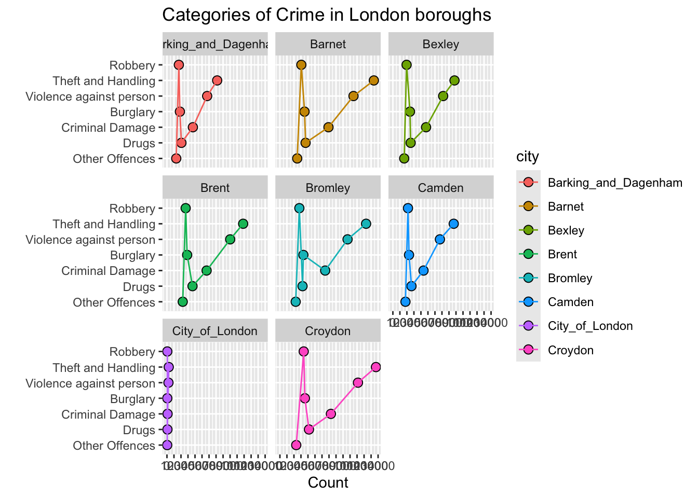
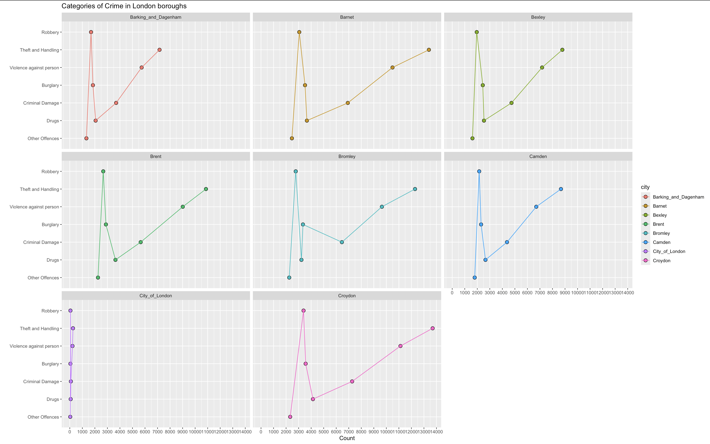
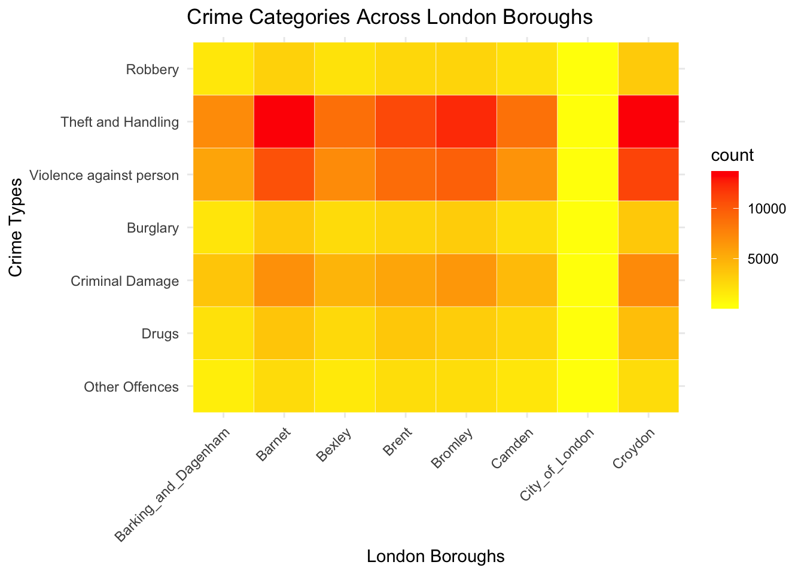

Donut charts depicting the distribution of crimes in nine London boroughs—Barnet, Bexley, Brent, Bromley, Camden, City of London, and Croydon—are displayed in the image. With colors indicated in the legend, each chart is divided into seven crime categories: robbery, theft and handling, drugs, burglary, criminal damage, robbery, and violence against the person. Theft and Handling and Violence Against the Person are the most noticeable categories in many boroughs; they are shown in red and light red, respectively. There is a noticeable difference in crime rates between the City of London and boroughs such as Barnet, Brent, and Croydon. Notable parts for burglary and criminal damage are also displayed in some regions, such as Bexley and Bromley.
By this we can produce better graphics or redesigning of the above data in Line plot and Heat Map.
Loading Libraries
library(lattice)library(tidyverse)
── Attaching core tidyverse packages ──────────────────────── tidyverse 2.0.0 ──
✔ dplyr 1.1.4 ✔ readr 2.1.5
✔ forcats 1.0.0 ✔ stringr 1.5.1
✔ ggplot2 3.5.1 ✔ tibble 3.2.1
✔ lubridate 1.9.3 ✔ tidyr 1.3.1
✔ purrr 1.0.2
── Conflicts ────────────────────────────────────────── tidyverse_conflicts() ──
✖ dplyr::filter() masks stats::filter()
✖ dplyr::lag() masks stats::lag()
ℹ Use the conflicted package (<http://conflicted.r-lib.org/>) to force all conflicts to become errors
Now make an indexed data.frame that stacks the race column values
London_crimesType <-gather(London_crimes, key = city, value = count,Barking_and_Dagenham:Croydon,factor_key = T)London_crimesType
Types city count
1 Robbery Barking_and_Dagenham 1694
2 Theft and Handling Barking_and_Dagenham 7160
3 Violence against person Barking_and_Dagenham 5732
4 Burglary Barking_and_Dagenham 1846
5 Criminal Damage Barking_and_Dagenham 3696
6 Drugs Barking_and_Dagenham 2060
7 Other Offences Barking_and_Dagenham 1324
8 Robbery Barnet 3052
9 Theft and Handling Barnet 13396
10 Violence against person Barnet 10492
11 Burglary Barnet 3511
12 Criminal Damage Barnet 6925
13 Drugs Barnet 3660
14 Other Offences Barnet 2465
15 Robbery Bexley 1956
16 Theft and Handling Bexley 8787
17 Violence against person Bexley 7170
18 Burglary Bexley 2439
19 Criminal Damage Bexley 4731
20 Drugs Bexley 2534
21 Other Offences Bexley 1614
22 Robbery Brent 2667
23 Theft and Handling Brent 10865
24 Violence against person Brent 9014
25 Burglary Brent 2882
26 Criminal Damage Brent 5655
27 Drugs Brent 3642
28 Other Offences Brent 2249
29 Robbery Bromley 2770
30 Theft and Handling Bromley 12289
31 Violence against person Bromley 9646
32 Burglary Bromley 3347
33 Criminal Damage Bromley 6454
34 Drugs Bromley 3225
35 Other Offences Bromley 2251
36 Robbery Camden 2152
37 Theft and Handling Camden 8676
38 Violence against person Camden 6705
39 Burglary Camden 2303
40 Criminal Damage Camden 4370
41 Drugs Camden 2652
42 Other Offences Camden 1794
43 Robbery City_of_London 50
44 Theft and Handling City_of_London 254
45 Violence against person City_of_London 214
46 Burglary City_of_London 48
47 Criminal Damage City_of_London 85
48 Drugs City_of_London 69
49 Other Offences City_of_London 34
50 Robbery Croydon 3394
51 Theft and Handling Croydon 13695
52 Violence against person Croydon 11127
53 Burglary Croydon 3561
54 Criminal Damage Croydon 7270
55 Drugs Croydon 4143
56 Other Offences Croydon 2328
Line Plot
Using lattice package, Let’s plot above data:
ggplot(London_crimesType, aes(x= count,y=Types,fill = city,group = city)) +geom_point(shape =21, size =2.8) +geom_line(aes(color = city)) +labs(x ="Count",y="",title ="Categories of Crime in London boroughs")+facet_wrap(~city)+scale_x_continuous(breaks=seq(0,14000,by=1000))

The above data is represented in the form of Line Graph

Comapring the Line plot to Donut Charts
The Line plot provides a detailed view of crime categories across London boroughs, illustrating crime counts with distinct points and connecting lines. This style makes it simple to compare patterns and trends, making it possible for users to recognize outliers and discover changes. A pie chart, on the other hand, usually displays the proportions of various sorts of crimes for a single borough, which limits its usefulness for comparative study across several categories.
A Donut chart can seem complex when there are many categories, but a line plot can clearly handle a large number of data points. donut charts are static, thus they are not very good at depicting trends over time, which is another area where line plots shine. Overall, pie charts work better for showing basic proportions within a particular context, whereas line plots are better suited for in-depth quantitative analysis and cross-borough comparisons.
Heat Map
Creating Heat map
ggplot(London_crimesType, aes(x = city, y = Types, fill = count)) +geom_tile(color ="white") +scale_fill_gradient(low ="yellow", high ="red") +labs(x ="London Boroughs", y ="Crime Types", title ="Crime Categories Across London Boroughs") +theme_minimal() +theme(axis.text.x =element_text(angle =45, hjust =1))

The above graph represents the given data in Heat Map form.
Comapring the Heat Map to Donut Charts
The donut charts help viewers understand the precise composition of crimes in diverse locations by efficiently illustrating the proportional distribution of different crime kinds within each borough. The segmented nature of the charts makes it difficult to compare the overall crime rates of several boroughs, even while they help to clearly grasp the various crime categories for individual boroughs.
On the other hand, a heat map uses color gradients to give a broad picture of crime intensity; higher crime rates are shown by deeper hues. This makes it possible to compare boroughs visually quickly, which facilitates the process of quickly determining which areas have higher crime rates.
Conclusion
The three graphs provide different levels of insight into crimes in London. Donut charts are effective for displaying the overall different crime categories within a single borough. However, because of their segmented design, which can cause clutter and make it challenging to combine information, they become less useful when comparing various boroughs.
Line graphs, on the other hand, excel at depicting trends over time, making them excellent for assessing crime rates in specific categories. On the other hand, heat maps provide a thorough picture of the amount of crime in several boroughs by employing color gradients to show different crime rates, with darker hues denoting higher crime rates.
Reference
[1] Shark Coder,“Matplotlib Pie Charts”,Availale: https://sharkcoder.com/data-visualization/mpl-pie-charts. [Accessed: October 5,2024]. [2] STAT 515, “Redesigning Examples”, Dr. Isuru Dassanayake, Available: https://canvas.gmu.edu/courses/25180/files/folder/Module%204?. [Accessed: October5,2024]